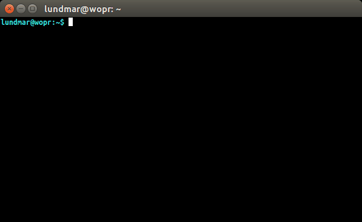

What is tio?"tio" is a simple TTY terminal application which features a straightforward commandline interface to easily connect to TTY devices for basic input/output.
Usage
The commandline interface features the following options:
$ tio --help
Usage: tio [<options>] <tty device>
Options:
-b, --baudrate <bps> Baud rate (default: 115200)
-d, --databits 5|6|7|8 Data bits (default: 8)
-f, --flow hard|soft|none Flow control (default: none)
-s, --stopbits 1|2 Stop bits (default: 1)
-p, --parity odd|even|none Parity (default: none)
-o, --output-delay <ms> Output delay (default: 0)
-n, --no-autoconnect Disable automatic connect
-l, --log <filename> Log to file
-l, --map <flags> Map special characters
-v, --version Display version
-h, --help Display help
In session, press ctrl-t + q to quit.
The only option which requires a bit of elaboration is perhaps the --no-autoconnect option.
By default tio automatically connects to the provided device if present. If the device is not present it will wait for it to appear and then connect. If the connection is lost (eg. device disconnects) it will wait for the device to reappear and then reconnect.
However, if the --no-autoconnect option is provided tio will exit if the device is not present or exit if an established connection is lost.
Features full bash autocompletion support.
Installation
From source tarball:
$ ./configure
$ make
$ make install
Ubuntu / Debian:
$ apt install tioFedora / RHEL:
$ dnf install tioFreeBSD:
$ cd /usr/ports/comms/tio
$ make install clean
LEDE Project/OpenWrt
$ opkg install tioArch Linux:
AUR package is available here.
Snap:
$ snap install tioOr to try out the latest development version:
$ snap install tio --edgeVisit snapcraft.io to see how to install snap for your distribution.
Note: Works best with snap v2.28+. However, man pages does still not work.
License
Tio is open source released under the GPLv2+ license.
Support
Please submit bug reports etc. via GitHub here.